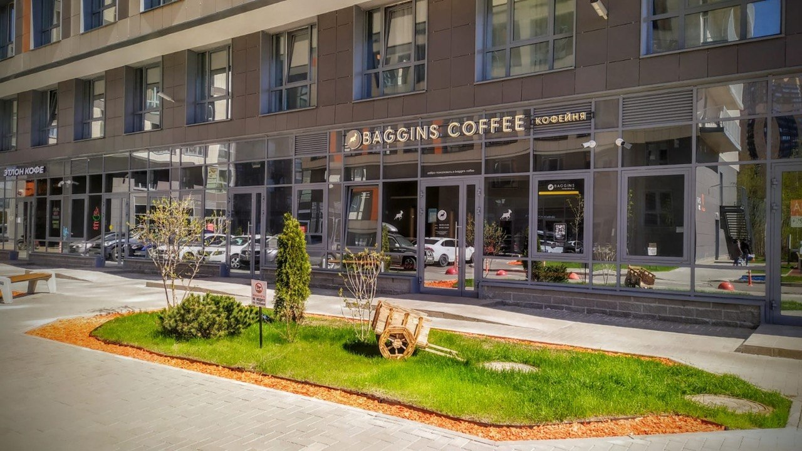
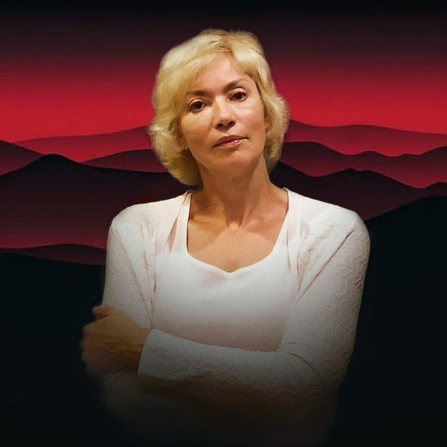
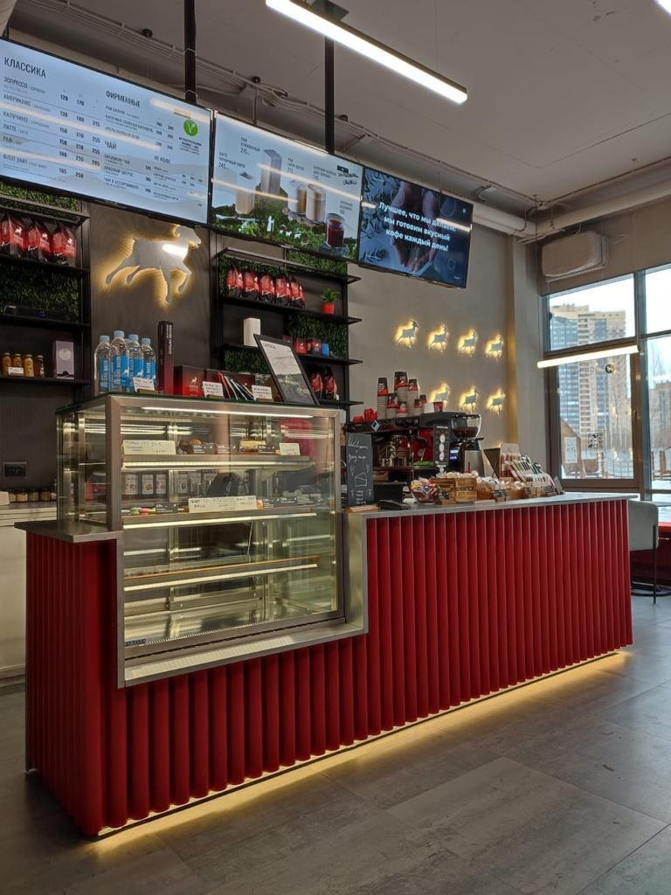
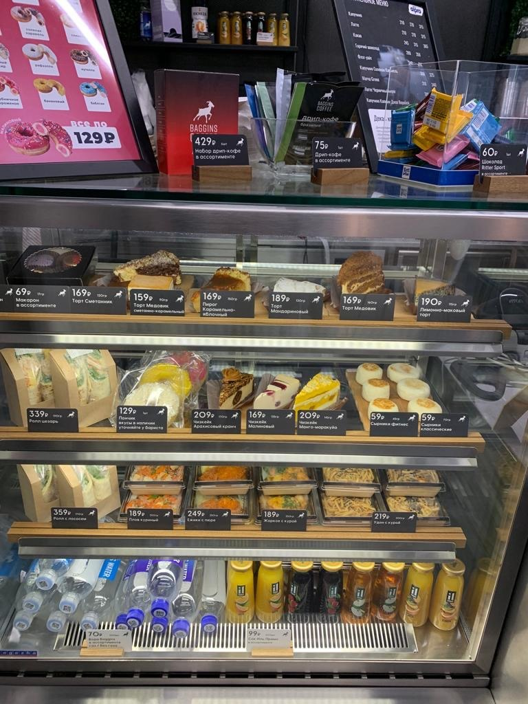
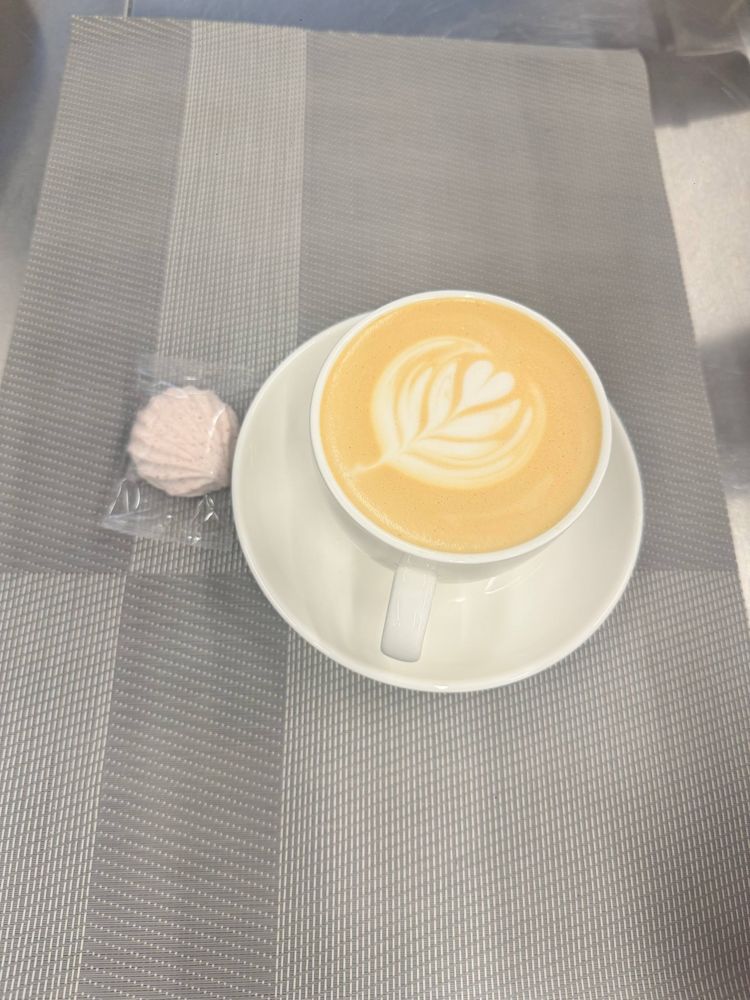
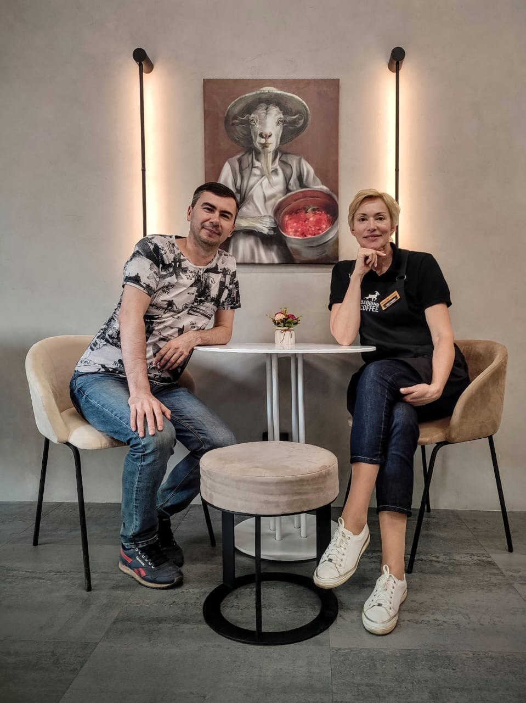
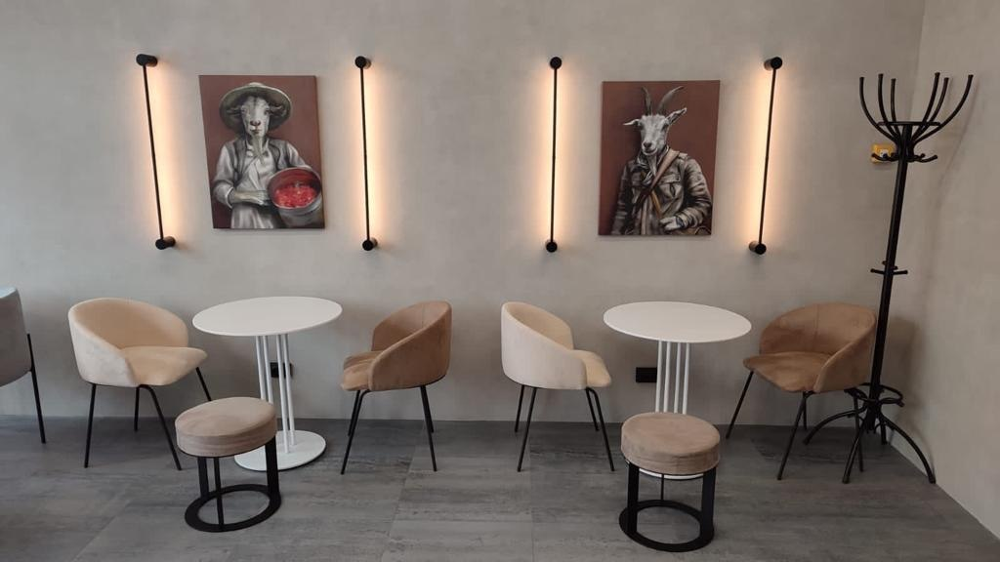
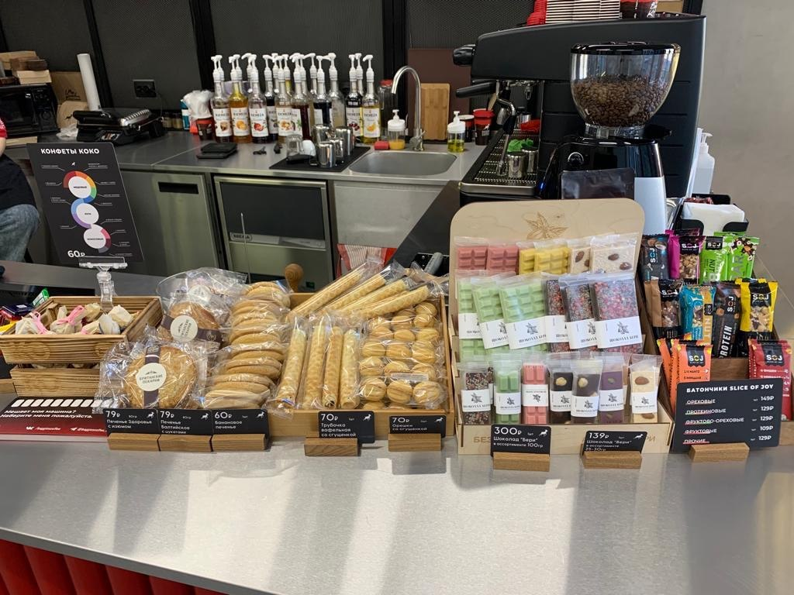

Идея открыть кофейню зародилась у меня совершенно неожиданно. Раньше я работала в шведско-швейцарском электротехническом концерне и ездила в командировки по Европе. Однажды я оказалась в маленьком немецком городке Люденшайд. Именно там меня впечатлили кофейни, их атмосфера и люди, начинавшие свой день с чашки кофе и газеты.
ЛИЧНАЯ ИСТОРИЯ · BAGGINS COFFEE
Предприятие
хорошего
настроения
Как мечта о кофейне пережила кризис и стала любимым делом
Читать историю ↓
НАВИГАЦИЯ ПО МАТЕРИАЛУ · 01 — 08
Содержание
Восемь глав о мечте, сложном старте, кризисе и людях, которые помогли не сдаться.
ПРЕДЫСТОРИЯ · ВВЕДЕНИЕ
С чего начинается большая история?
01
НАЧАЛО ИСТОРИИ
Мечта из Германии

Светлана — владелица кофейни Baggins CoffeeВ 2018 году я ещё работала в шведско-швейцарской электротехнической компании и часто ездила в командировки. В немецком городке Люденшайд меня впечатлили уютные кофейни: люди заходили за фильтр-кофе, читали газеты и начинали свой день. Тогда я впервые подумала, что хочу открыть что-то подобное.
Я пыталась заинтересовать коллег общей кофейней-пекарней, но поддержки не нашла. Одной начать было слишком дорого. Во время пандемии я даже радовалась, что мы не решились на этот шаг: кофейни закрывались, и казалось, что идея уже неактуальна.
Позже иностранные компании начали уходить с российского рынка, и работы стало намного меньше. Возвращаться в прежнюю сферу мне не хотелось. Я снова вспомнила о кофе — и решила попробовать воплотить давнюю мечту.
КОНЕЦ ГЛАВЫ 01
СЛЕДУЮЩАЯ ГЛАВА ↓
02
ВЫБОР И РЕШЕНИЕ
Точка невозврата и переговоры
Случайно я узнала, что бывший коллега уже владеет кофейней. Он познакомил меня с Baggins Coffee на Васильевском острове. Мне понравились интерьер и сама идея, поэтому я попросила помочь разобраться в кофейном бизнесе.
Осенью я встретилась с собственником сети и коммерческим директором. Разговор начался непросто: собственник открыто говорил, что их типичный партнёр — человек 30–40 лет. Но коммерческий директор поддержала меня и предложила взять проект под свою ответственность. В тот же день мы договорились, а вскоре подписали договор франшизы.
«Несмотря на такое откровенное оскорбление, я была рада, что во мне не сработало чувство отторжения и бешенства».
Я выбрала франшизу, потому что раньше не управляла кофейней и хотела работать с известным брендом. Мне была важна поддержка: помощь с выбором места, ремонтом, открытием и понятный план действий. Самостоятельно начинать с нуля было бы гораздо сложнее.
ПЕРВЫЕ СТРАХИ
Почему я выбрала франшизу

КОНЕЦ ГЛАВЫ 02
СЛЕДУЮЩАЯ ГЛАВА ↓
03
ОТКРЫТИЕ И ПЕРВЫЙ КРИЗИС
Первые страхи и фееричное открытие

Витрина с десертами и продуктами для гостейПока я подписывала договор, почти не боялась — тогда я ещё не до конца понимала, с чем столкнусь. Тревога появилась во время ремонта: строительство задержалось почти на полтора месяца. Арендные каникулы заканчивались, расходы росли, а кофейня ещё не приносила дохода.
Мы открылись 4 апреля. Были шарики, торт, цветы, команда управляющей компании, листовки и акция «1+1». Получился настоящий праздник. Я радовалась, но всё равно думала: «Ну вот, началось. А что будет дальше?»
«Никогда не открывайте бизнес на последние деньги». — Светлана
Весна и лето прошли удачно: гостей было много, появилась прибыль. Но осенью выручка резко снизилась. Аренду и зарплаты нужно было платить в любом случае, и в какой-то момент мне пришлось самой выходить за бар.
Когда я поняла, что не могу платить бариста, пришлось самой выходить за стойку. К финансовой нагрузке добавилась физическая усталость.
Сотрудников я тогда ещё не умела подбирать. Кто-то не справлялся с ответственностью, кто-то плохо общался с гостями. Частая смена команды означала, что обучение приходилось начинать снова.
Мне помогали менеджер управляющей компании и муж. Менеджер поддерживала советом и морально, а муж в свободное время тоже работал за баром. Я многому училась у них и постепенно набиралась опыта.
КОНЕЦ ГЛАВЫ 03
СЛЕДУЮЩАЯ ГЛАВА ↓
04
СОМНЕНИЯ И УСТАЛОСТЬ
«Розовые очки разбились»

Маленькие детали, из которых складывается настроениеВторой год оказался ещё тяжелее первого. К февралю я поняла, что больше не хочу заниматься кофейней. Романтика первых месяцев исчезла, а на её месте остались усталость и постоянные расходы.
Я решила выставить бизнес на продажу. Но понимала: с отрицательными финансовыми показателями продать кофейню по достойной цене почти невозможно. Не хотелось терять вложенные деньги, поэтому мы решили поработать ещё одно лето, выйти в плюс и подготовить предложение для покупателя.
КОНЕЦ ГЛАВЫ 04
СЛЕДУЮЩАЯ ГЛАВА ↓
05
ПОВОРОТНЫЙ МОМЕНТ
Второе дыхание
В мае ситуация начала меняться. Оборот вырос на 25%, стало больше гостей, и у меня снова появилась энергия. К этому времени я научилась лучше подбирать сотрудников. В кофейню пришли бариста, которые быстро нашли общий язык с гостями и стали частью команды.
+25%
Мы решили не продавать кофейню. За следующие семь месяцев команда стала очень сплочённой. Нас всего трое, но два бариста ответственно работают и поддерживают друг друга. Впервые я смогла спокойно уехать в отпуск на две недели и доверить им кофейню — они справились отлично.
МАЙ · ПОВОРОТНЫЙ МОМЕНТ
КОНЕЦ ГЛАВЫ 05
СЛЕДУЮЩАЯ ГЛАВА ↓
06
ФИЛОСОФИЯ МЕСТА
«Предприятие хорошего настроения»


Baggins Coffee — часть сети, поэтому у наших кофеен есть общие стандарты: узнаваемая вывеска, уютный интерьер, чистота, качественные напитки и внимательное обслуживание.
Моя кофейня особенно тихая и уютная. Летом большие окна открываются во двор с клумбами, цветами и зеленью. Мы называем её «предприятием хорошего настроения»: стараемся встречать каждого гостя приветливо и не переносить плохое настроение на других.
Иногда бариста рисуют на крышке стакана зайчика или улыбку, а иногда просто говорят гостю: «А вы сегодня прекрасны». К каждому кофе мы подаём зефирку — эта маленькая деталь часто вызывает улыбку.
«Мы любим повторять, что наше предприятие — это предприятие хорошего настроения».
Наши гости — отдельная гордость. К нам приходят с собаками и кошками, и с разрешения хозяев мы размещаем их фотографии на специальной доске. У кофейни высокие оценки на Яндексе и 2ГИС — 5 из 5 более чем по 200 отзывам.
У нас были постоянные гости, которых я называла «гость-часы». Утром почти в одно и то же время заходили айтишник за кофе с яблочным сиропом и доктор за большим кофе с чизкейком. Они садились за столик и обсуждали работу. Такие маленькие привычки создавали особую атмосферу.
МАЛЕНЬКИЕ ИСТОРИИ БОЛЬШОЙ КОФЕЙНИ
«Гость-часы»
Запомнилась и вечерняя гостья, которая приходила с мамой почти к закрытию. Сначала ей не нравилось, что каждый раз её обслуживает новый бариста. Я поговорила с ней, объяснила ситуацию, и со временем она стала нашей постоянной гостьей.
КОНЕЦ ГЛАВЫ 06
СЛЕДУЮЩАЯ ГЛАВА ↓
07
ОБРАТНАЯ СТОРОНА БИЗНЕСА
Локальные проблемы
У кофейни есть и сложности. Мы находимся во дворе, а не на проходной улице. Надеялись, что после открытия поликлиники рядом появится дополнительный поток людей, но территорию закрыли постоянным забором. Кофейню стало плохо видно, поэтому новых гостей приходится привлекать в конкуренции с заведением прямо напротив.
Есть и другие ограничения: у жилого комплекса нет обычной парковки, а установить кондиционер на фасаде нельзя. Летом спасали вентиляторы и открытые двери.
Теперь я понимаю, насколько важно правильно выбрать место. Тогда двор казался уютным, но жилой комплекс ещё не был заселён, а поток людей оказался небольшим. Если бы я начинала заново, изучила бы локацию гораздо внимательнее.
КОНЕЦ ГЛАВЫ 07
СЛЕДУЮЩАЯ ГЛАВА ↓
08
ОПЫТ И ВЫВОДЫ
Уроки, которые я вынесла
Бизнес научил меня терпению, особенно в работе с людьми, и помог сохранить оптимизм. Без него я, наверное, не решилась бы на такой шаг и не прошла бы через трудности.
Франшиза снимает часть задач: сеть занимается брендом, продвижением, меню и общими стандартами. Бариста участвуют в конкурсах и обмениваются рецептами. Я могу предлагать идеи и развивать своё заведение, но при этом следую правилам сети. Благодаря этому гость получает привычное качество в любой кофейне.
Пока я не планирую открывать вторую точку. При нынешних оборотах накопить на неё сложно, а новый кредит — дополнительный риск. Если решусь на расширение, то снова выберу франшизу: начинать одной с нуля мне было бы слишком сложно.
ТРИ СЛОВА О КОФЕЙНЕ
01
Гостеприимно
02
Атмосферно
03
Очень вкусно
КОНЕЦ ИСТОРИИ
ВЕРНУТЬСЯ НАВЕРХ ↑
Гостеприимно. Атмосферно. Очень вкусно. — Светлана, владелица Baggins Coffee
Предприятие
хорошего настроения.
BAGGINS COFFEE
ВЕРНУТЬСЯ К НАЧАЛУ ↑